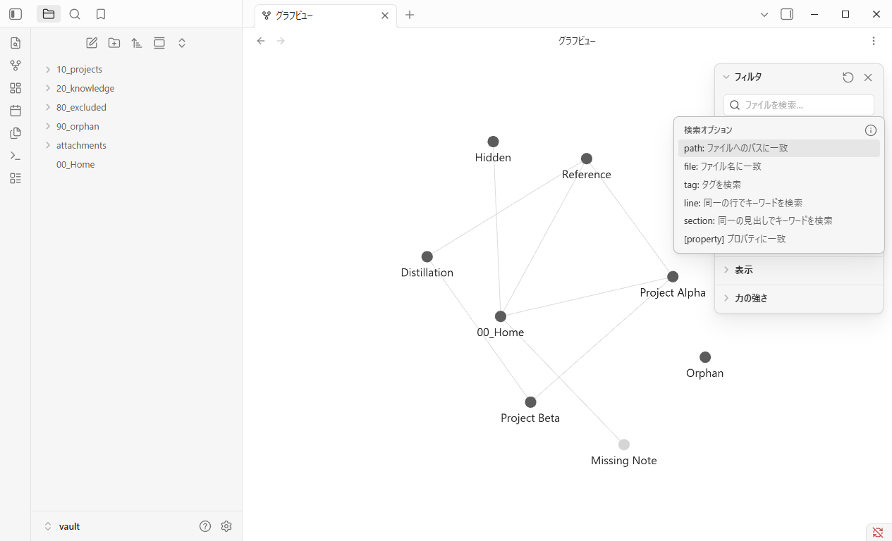
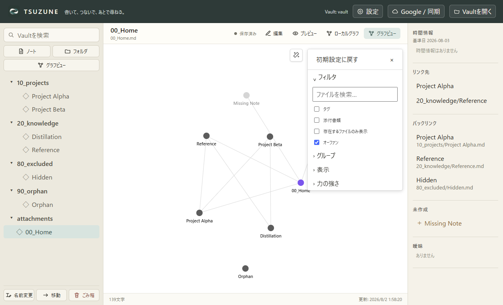
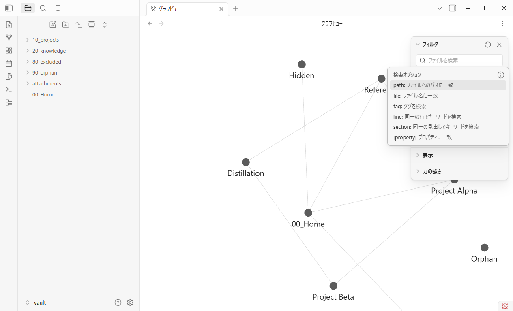
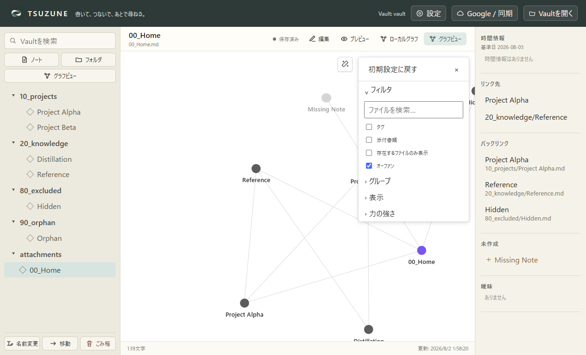
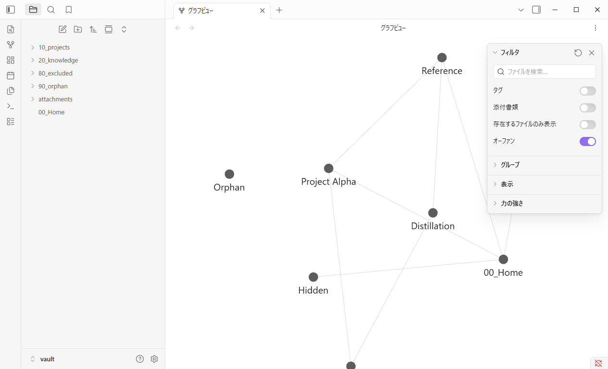
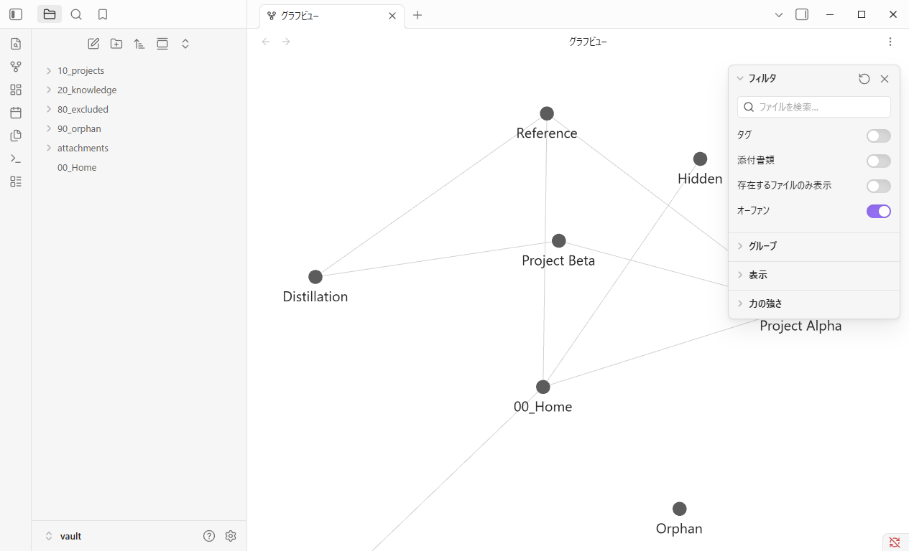
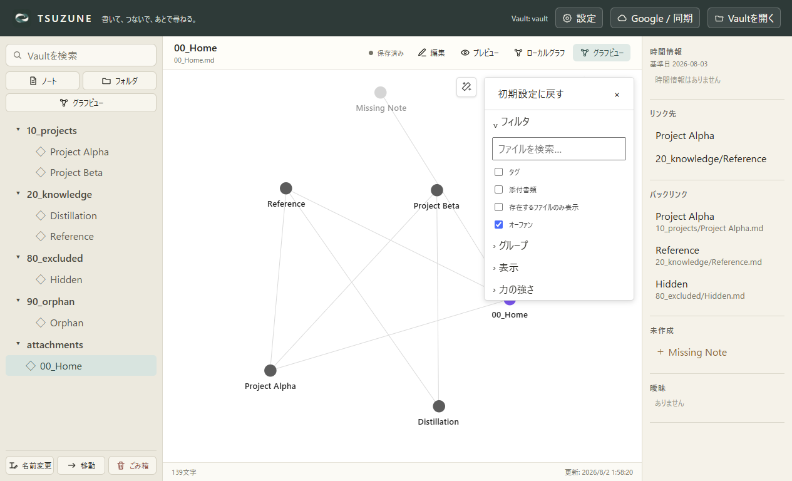

GP0-3b-c · Camera lifecycle
ズームは残り、パンは中央へ戻る。
固定Obsidian Desktop 1.13.4とTSUZUNEを、同じfixture・1265×768・DPR 1・ライトテーマで比較しました。制御された論理入力後、Graph再表示後、完全再起動後のカメラ契約は一致しています。
6 / 6 camera checks matched
1.5×両製品で保存されるズーム
+96, +64背景ドラッグで適用したパン
0, 0再表示・再起動後の中央オフセット
契約比較
Obsidianの生panはdevice pixel中心座標なので、canvas中央からのオフセットへ正規化しています。ズームは補間中の描画値ではなく、保存対象のtargetScaleを正本にしました。
| Check | Obsidian | TSUZUNE | Status |
|---|---|---|---|
| ホイールで1.5倍ズーム | 1.5 | 1.5 | 一致 |
| 背景を+96,+64 CSS pxパン | [95.76, 64.00] | [96.00, 64.00] | 一致 |
| Graph再表示後のズーム | 保持 | 保持 | 一致 |
| Graph再表示後のパン | 中央へリセット | 中央へリセット | 一致 |
| アプリ再起動後のズーム | 保持 | 保持 | 一致 |
| アプリ再起動後のパン | 中央へリセット | 中央へリセット | 一致 |
画面証拠
Baseline


After camera input


After Graph reopen

After app restart


判断
TSUZUNE本体の修正は不要です。 パンを永続化すると、今回固定したObsidian 1.13.4の公開挙動から逆に離れます。比較・再現スクリプトと証拠のみ追加しました。
入力機構はObsidian側がCDPマウス入力、TSUZUNE側が隔離オフスクリーンのDOM合成入力です。この結果はGlobal Graphのカメラ生命周期だけを確定します。物理マウス／trusted event、pixel単位の描画一致、Obsidianのズーム補間曲線、Local Graph、fit/reset、workspace leaf自動復元は未確定です。